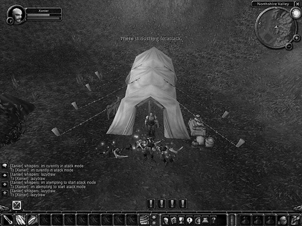

{% include JB/setup %}
{% raw %}
<div>
<a name="toppage" class="pcalibre calibre1"></a><table width="100%" border="0" cellspacing="0" cellpadding="0" class="sfbody"><tr valign="top" class="calibre2"><td class="calibre3"><a name="MainContent" class="pcalibre calibre1"></a><table width="95%" class="sfbody"><tr class="calibre2"><td class="pcalibre1 v"><!--Copyright (c) 2002 Safari Tech Books Online--><table width="100%" border="0" cellspacing="0" cellpadding="2" class="calibre4"><tr class="calibre2"><td valign="middle" class="v1 pcalibre1" height="5"></td></tr><tr class="calibre2"><td valign="middle" class="v1 pcalibre1"><table cellpadding="0" cellspacing="0" border="0" width="100%" class="calibre4"><tr class="calibre2"><td class="calibre6"><span class="calibre7"> </span>
                   
                  <span class="calibre7">   </span>
             <span class="calibre7"> </span></td></tr></table></td><td class="calibre8"/><td valign="middle" class="v2 pcalibre1"> 
           
          <span class="calibre7"><a target="_self" href="ch02lev1sec5.html" title="Previous section" class="pcalibre calibre1"></a></span>
				
				 
				
				<span class="calibre7"><a target="_self" href="ch02lev1sec7.html" title="Next section" class="pcalibre calibre1"></a></span></td></tr></table><div id="section" class="calibre15"><table width="100%" border="0" cellspacing="0" cellpadding="0" class="calibre4"><tr class="calibre2"><td valign="top" class="calibre8"><a href="10061538.html" class="pcalibre calibre1"></a>Security Game Programming Networking Programming Greg Hoglund Gary McGraw Addison Wesley Professional Exploiting Online Games: Cheating Massively Distributed Systems<a name="ch02lev1sec6" class="pcalibre calibre1"></a>
<h3 id="title-IDAEX2UP" class="docSection1Title">Tooling Up</h3>
<p class="docText">By now we have described a number of common "game cheating 101" attacks. We've even shown you how simple macros work. But explaining how these things work is not quite the same as seeing how they are constructed. Toward that end, we present a simple macro for WoW. <span class="docEmphasis">Warning</span>: Use of this macro is cheating and is against the rules. Your character may be banned from the game if you use this macro.</p>
<p class="docText">Note that these kinds of tools are in common use every day in all kinds of games. It's not just in WoW that cheating happens.</p>
<a name="ch02lev2sec13" class="pcalibre calibre1"></a>
<h4 id="title-IDAXX2UP" class="docSection2Title">AC Tool: Macro Construction</h4>
<p class="docText"><a name="iddle1004" class="pcalibre calibre1"></a><a name="iddle1065" class="pcalibre calibre1"></a><a name="iddle1454" class="pcalibre calibre1"></a><a name="iddle1502" class="pcalibre calibre1"></a><a name="iddle1589" class="pcalibre calibre1"></a><a name="iddle1613" class="pcalibre calibre1"></a><a name="iddle1666" class="pcalibre calibre1"></a><a name="iddle1667" class="pcalibre calibre1"></a><a name="iddle1673" class="pcalibre calibre1"></a><a name="iddle1674" class="pcalibre calibre1"></a><a name="iddle1677" class="pcalibre calibre1"></a><a name="iddle1710" class="pcalibre calibre1"></a><a name="iddle1711" class="pcalibre calibre1"></a><a name="iddle1713" class="pcalibre calibre1"></a><a name="iddle1722" class="pcalibre calibre1"></a><a name="iddle1769" class="pcalibre calibre1"></a><a name="iddle2303" class="pcalibre calibre1"></a>There are a number of popular macro construction tools on the Internet. These include macro express (which costs money), AC Tool, AutoHotKey, AutoIt3.0, LTool-0.3, and xautomation. All of the ones mentioned here have been nicely collected on a wiki at &lt;<a class="pcalibre6 pcalibre5 calibre1" target="_blank" href="http://wiki.atitd.net/tale2/Macros">http://wiki.atitd.net/tale2/Macros</a>&gt;.</p>
<p class="docText">AC Tool is particularly popular. You can download it for free from &lt;<a class="pcalibre6 pcalibre5 calibre1" target="_blank" href="http://www.actool.net">http://www.actool.net</a>&gt;. Once you have installed AC Tool, you can create macros for WoW using its macro language. The FAQ on the AC Tool Web site describes the tool as follows:</p>
<blockquote class="calibre24">
<p class="docText">AC Tool is a utility that allows you to list a series of keystrokes and mouse clicks in advance and send them to Asheron's Call at a later time. The list of keystrokes and mouse clicks is called a macro or a script.</p>
</blockquote>
<p class="docText">Here is a simple grinding/farming macro (called Hoglund's WoW_Agro Macro) designed to be used with AC Tool. This macro controls a character that camps out waiting for monsters to appear and kills them when they do. We'll interleave commentary with the code so you can understand what's happening.</p>
<div class="docText1"><pre class="calibre43">// -------------------------
// hoglund's WoW_Agro Macro
// -------------------------
//RESOLUTION: 1024x768
//PUT ALL FILES IN YOUR AC TOOL\MACROS FOLDER.

SETActiveWindow World of Warcraft
delay 4 sec

// put all your 'globals' here
Constants
       gPCHealth = "NoValue"
       // the current health of the PC ( HIGH | MEDIUM | LOW |
CRITICAL )
       gMobHealth = "NoValue"
       // the current health of the current targeted mob ( HIGH |
MEDIUM | LOW | CRITICAL )
       gPCPosture = "Standing"
       // current/starting posture of the PC character
       gMachineState = "START"
       // global machine state, core of the system
       gSelectedTarget = "NoTarget"
       pc_name = xanier
</pre></div><br class="calibre15"/>
<p class="docText">The first part of the code sets up global variables, most importantly the currently selected target, the name of the character being automated, and the current state of the state machine. This script implements a classic architecture that many macros follow—that is, it is designed to operate as a state machine. This means that the script maintains a single state variable while automating the character. States can have mnemonic labels such as "attacking," "healing," or "running away for dear life." Only one state can be active at any one time, and there are rules for transitioning from one state to another.</p>
<div class="docText1"><pre class="calibre43">// hot keys
keyExecAttack = 1
// set your F1 key to attack before using this MACRO
keyExecPickup = {F2}
</pre></div><br class="calibre15"/>
<p class="docText">The part of the script above indicates which keys need to be used in order to automate the game. When the F2 key is pressed, the character picks up items, and when the number 1 key is pressed, the character attacks. This kind of key binding is very common in macros like this. Simple macros operate the software using only keystrokes and mouse movements—there is nothing invasive that exploits the game software directly. More advanced methods of cheating are nowhere near as simple.</p>
<div class="docText1"><pre class="calibre43">       // screen coordinates
       coord_MobHPMin           = 262, 50
       coord_MobHPFull          = 370, 50

       coord_SafeHP             = 200, 50
       //if green at or above this mark, you're fine
       coord_HalfHP             = 146, 50
       //half hp if lower than this mark
       coord_LowHP              = 116, 50
       //low hp if at or lower than this mark
       coord_DeadHP             = 96, 50
       //you're dead :(
       coord_temp               = 0,0

       // colors
       color_AliveGreen         = 150
       color_AttackRed          = 147
       // temp stuff
       TempTarget               = NoValue
       //holds the value for target before placing into list
       tCount                   = 1
       //used to traverse the targetList index
       Total                    = 1
       //used to find the ListCount
       redDifference            = 0
       blueDifference           = 0
       greenDifference          = 0
       numAttacks               = 0
       Returned                 = 0
       aCount                   = 0

End

</pre></div><br class="calibre15"/>
<p class="docText">The section of the script above is quite fascinating. It designates x- and y-coordinates on the screen. Furthermore, it designates exact color thresholds for pixels. This information is used to sample pixels on the screen at precise x- and y-coordinates. The pixels in question happen to correspond to locations where health and enemy health are displayed on the screen for the game user. This information, along with the color threshold, is then used to determine whether the character is at full health, is partially damaged, or is in critical condition—all via sampling pixels on the screen and figuring out color matches while the macro runs.</p>
<div class="docText1"><pre class="calibre43">////MAIN LOOP
While 1=1
  Processmessages    //required for AC Tool operation
  Call Lazy8_Main    //the main lazy8 machine handler
End
///END MAIN LOOP

/////////////////////////////////////////////////////
// the main lazy8 machine handler
/////////////////////////////////////////////////////
Procedure Lazy8_Main

       //KeyDown /whisper $pc_name Lazy8_Main {RETURN}
       //KeyDown /whisper $pc_name current state: $gMachineState
{RETURN}
</pre></div><br class="calibre15"/>
<p class="docText">You see this sort of thing all over the place in the macro; the <tt class="calibre38">whisper</tt> command prints a message on the screen and is used to output debug <a name="iddle1831" class="pcalibre calibre1"></a>messages while the macro is under development. You can see the results of a <tt class="calibre38">whisper</tt> call in the screenshot in <a class="pcalibre6 pcalibre5 calibre1" href="#ch02fig05">Figure 2-5</a>.</p>
<a name="ch02fig05" class="pcalibre calibre1"></a><p class="calibre28"><center class="calibre29">
<h5 class="docFigureTitle">Figure 2-5. A screenshot from WoW showing what happens when the WoW_Agro macro runs. Virtual bodies pile up as the macro runs all night long.</h5>
</center></p><p class="docText"><div class="v8 pcalibre3 pcalibre2"><a target="_blank" href="fig02-05_alt.jpg" class="pcalibre calibre20">[View full size image]</a></div></p>
<br class="calibre15"/>
<div class="docText1"><pre class="calibre43">       // perform effective switch() on machine state
       //
       // START
       if $gMachineState = "START"
       Call LazyStart
       end

       // IDLE
       // bored, we need to do something
       if $gMachineState = "DRAWING"
       Call LazyDraw
       end

       // END
       // game over, man
       if $gMachineState = "END"
       call LazyEnd
       end
End //end Lazy8_Main

Procedure LazyStart
       KeyDown /stand {RETURN}
       delay 100
       // go directly to draw agro mode
       Set gMachineState = "DRAWING"
End

Procedure LazyDraw
       KeyDown /whisper $pc_name LazyDraw {RETURN}

       //Call LureIfNoMonster

       //target last agro, this targets nearest also
       KeyDown {TAB}
       Delay 400

       Call EnsureAttackMode

       // hero strike
       KeyDown 2
       Delay 400

End
</pre></div><br class="calibre15"/>
<p class="docText"><a name="iddle1009" class="pcalibre calibre1"></a><a name="iddle1010" class="pcalibre calibre1"></a><a name="iddle1012" class="pcalibre calibre1"></a><a name="iddle1672" class="pcalibre calibre1"></a><a name="iddle1834" class="pcalibre calibre1"></a><a name="iddle1841" class="pcalibre calibre1"></a>In the above section of the macro, we perform a pixel test to determine whether the character is currently in "agro" mode—that is, attacking a monster. If not, we call a routine to target the nearest monster and begin attacking. The script presses the 2 key in order to perform a hero strike—a powerful form of attack in the game.</p>
<div class="docText1"><pre class="calibre43">// run forward and back to lure agro
Procedure Lure
       KeyDown {UP} 3 sec
       KeyDown {DOWN} 3 sec
End

// put the PC into attack mode
Procedure EnsureAttackMode
       LoadRGB 34,64
       Compute $redDifference = Abs ( $color_AttackRed -
{RGBRED} )
       if $redDifference &lt; 80
               KeyDown /whisper $pc_name im currently in attack
mode {RETURN}
       else
               KeyDown /whisper $pc_name im attempting to start
attack mode {RETURN}
              KeyDown $keyExecAttack 150
       end
End

// perform a random move if no monster is targeted
Procedure LureIfNoMonster
       Call util_GetMobHealth
       if $gMobHealth = "DEAD"
               KeyDown /whisper $pc_name Rest in Peace! .. luring
{RETURN}
               Call Lure
       else
               KeyDown /whisper $pc_name still going... {RETURN}
       end
End
</pre></div><br class="calibre15"/>
<p class="docText">The section of the macro above is used to "draw agro" from nearby monsters. Essentially this amounts to getting the monster's attention by moving nearby. Such movement causes the monster to attack the character. Once the attack occurs, the character can attack the monster and kill it.</p>
<div class="docText1"><pre class="calibre43">////////////////////////////////////////////////////
// END - kill the engine
/////////////////////////////////////////////////////
Procedure LazyEnd
       KeyDown /whisper $pc_name LazyEnd {RETURN}

       //TODO
End

/////////////////////////////////////////////////////
// Utility Function
// Get target mob health
/////////////////////////////////////////////////////
Procedure util_GetMobHealth
       //KeyDown /whisper $pc_name util_GetMobHealth {RETURN}

       LoadRGB $coord_MobHPMin
       Compute $greenDifference = ABS ( $color_AliveGreen -
{RGBGREEN} )

       //KeyDown /whisper $pc_name sample monster {RGBRED}
{RGBBLUE} {RGBGREEN} {RETURN}

       if {RGBRED} = 0 AND {RGBBLUE} = 0 AND $greenDifference &lt; 80
              Set gMobHealth = "ALIVE"
              //KeyDown /whisper $pc_name monster is still alive
{RGBGREEN} {RETURN}
       else
              // we never found any green
              Set gMobHealth = "DEAD"
              KeyDown /whisper $pc_name monster is dead {RETURN}

       end

End
</pre></div><br class="calibre15"/>
<p class="docText">This section of the macro detects whether or not the target monster is dead yet. Like monitoring character health, this is done through the simple technique of sampling pixels. In this case we pull a sample at the location that displays the monster's health bar.</p>
<p class="docText">And that's it, a complete macro for automating the attraction and killing of monsters in WoW. By running this macro, a character can accumulate experience and gold without human intervention.</p>
<p class="docText"><a class="pcalibre6 pcalibre5 calibre1" href="#ch02fig05">Figure 2-5</a> shows a screenshot taken while the WoW_Agro macro is running. Notice the pile of dead monsters near the character. You should <a name="iddle1101" class="pcalibre calibre1"></a><a name="iddle1130" class="pcalibre calibre1"></a><a name="iddle1333" class="pcalibre calibre1"></a><a name="iddle1878" class="pcalibre calibre1"></a>note that running a macro like this is against the rules and can cause you to be banned from the game. The WoW character's name displayed on the screen, Xanier, is no secret. Blizzard banned Hoglund's Xanier account just before the character was to reach level 60 (which at the time was the ultimate level for a WoW character). In this case, Hoglund was a little too flagrant with his cheating. Hoglund had spent over $400 on game-card registered accounts by this point. All of the accounts were banned for various reasons.</p>
<p class="docText">Time for another pesky question: Why is farming with a macro cheating? Some would argue that Blizzard made the game boring in the first place, so fair is fair.</p>
<a href="10061538.html" class="pcalibre calibre1"></a><ul class="calibre18"></ul></td></tr></table><table width="100%" border="0" cellspacing="0" cellpadding="2" class="calibre4"><tr class="calibre2"><td valign="middle" class="v1 pcalibre1" height="5"></td></tr><tr class="calibre2"><td valign="middle" class="v1 pcalibre1"><table cellpadding="0" cellspacing="0" border="0" width="100%" class="calibre4"><tr class="calibre2"><td class="calibre6"><span class="calibre7"> </span>
                   
                  <span class="calibre7">   </span>
             <span class="calibre7"> </span></td></tr></table></td><td class="calibre8"/><td valign="middle" class="v2 pcalibre1"> 
           
          <span class="calibre7"><a target="_self" href="ch02lev1sec5.html" title="Previous section" class="pcalibre calibre1"></a></span>
				
				 
				
				<span class="calibre7"><a target="_self" href="ch02lev1sec7.html" title="Next section" class="pcalibre calibre1"></a></span></td></tr></table><table width="100%" border="0" cellspacing="0" cellpadding="2" class="calibre4"><tr class="calibre2"><td valign="top" class="calibre14"><span class="calibre7"></span></td></tr></table></div><!--IP User 2--></td></tr></table></td><td class="calibre3">
                         
                      </td></tr><tr class="calibre2"><td colspan="3" valign="bottom" class="calibre3"><br class="calibre15"/><p class="v5 pcalibre1"></p><br class="calibre15"/></td></tr></table></div>

{% endraw %}

